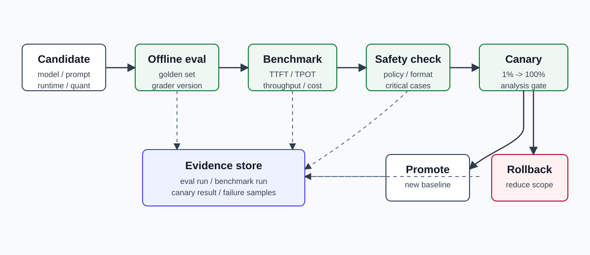

15장. Evaluation과 release gate: 빠른 모델이 좋은 모델인지 확인하기¶
14장에서는 운영 중인 LLM service를 metric, trace, log로 관측하는 방법을 봤다. 하지만 관측성은 배포된 뒤의 문제를 찾는 도구다. Production에 올리기 전에 더 중요한 질문이 있다.
새 model, prompt, quantization, runtime config가 정말 배포해도 되는 상태인지 어떻게 판단할 것인가?
Serving engineer는 "tokens/sec가 빨라졌다"는 말만으로 release를 승인하면 안 된다. LLM system은 더 빠르지만 더 틀릴 수 있고, 더 저렴하지만 특정 tenant에서 품질이 무너질 수 있으며, benchmark에서는 좋아도 canary traffic에서 p95 latency가 깨질 수 있다.
이 장의 독자 질문은 다음과 같다.
LLM release를 품질, latency, cost, safety 기준으로 막거나 통과시키려면 어떤 evaluation과 gate를 만들어야 하는가?
핵심은 evaluation을 실험 노트가 아니라 release control plane의 일부로 다루는 것이다.
"좋은 모델"은 하나의 숫자가 아니다¶
LLM release에서 바뀌는 대상은 모델 weight만이 아니다.
| 변경 대상 | 예 | 깨질 수 있는 것 |
|---|---|---|
| Model | base model 교체, fine-tune, LoRA | 정답률, 문체, safety, latency, token cost |
| Prompt | system prompt, few-shot 예시, output schema | format 준수, hallucination, refusal rate |
| Retrieval | embedding model, chunking, reranker, top-k | context recall, faithfulness, latency |
| Runtime | vLLM 설정, TensorRT-LLM engine, batch policy | TTFT, TPOT, throughput, OOM |
| Quantization | FP8, INT8, AWQ, GPTQ | 품질 회귀, 긴 context 안정성, 특정 언어 성능 |
| Platform | GPU type, replica count, autoscaling, routing | p95/p99, cost, failure isolation |
따라서 release gate는 "accuracy 1개" 또는 "latency 1개"로 충분하지 않다. 최소한 품질, serving 성능, 비용, 안전성, 운영 안정성을 함께 본다.

Evaluation을 세 층으로 나눈다¶
Production LLM evaluation은 한 번에 끝나는 테스트가 아니라 서로 다른 속도의 세 층이다.
| 층 | 실행 시점 | 목적 | 예 |
|---|---|---|---|
| Offline eval | PR, nightly, release candidate | 품질 회귀를 싸게 조기 탐지 | golden set, task benchmark, RAG eval |
| Serving benchmark | release candidate, capacity planning | latency, throughput, VRAM, cost 확인 | TTFT/TPOT, p95/p99, tokens/sec |
| Online canary | 실제 traffic 일부 | 현실 workload에서 품질/성능/오류 확인 | version split, shadow traffic, canary analysis |
Offline eval은 품질을 빠르게 잡지만 production traffic의 queue, cache, GPU placement를 재현하지 못한다. Serving benchmark는 infra 병목을 드러내지만 답변 품질을 보장하지 않는다. Online canary는 현실성이 높지만 사용자 영향이 생길 수 있으므로 traffic 비율과 rollback 기준이 있어야 한다.
세 층을 모두 연결해야 한다.
- Offline eval이 실패하면 배포 후보를 만들지 않는다.
- Offline eval은 통과했지만 serving benchmark가 실패하면 runtime/config를 고친다.
- Offline eval과 benchmark를 통과해도 canary가 실패하면 promote하지 않는다.
- Canary가 통과한 결과와 metric을 다음 release의 baseline으로 저장한다.
Golden set은 운영 사건에서 자란다¶
처음부터 완벽한 eval dataset을 만들려고 하면 오래 걸리고 실패한다. 더 나은 출발점은 production incident와 사용자 피드백에서 golden set을 키우는 것이다.
Golden set에는 다음 항목이 들어가야 한다.
| 필드 | 이유 |
|---|---|
case_id |
결과 추적과 회귀 분석 |
task_type |
요약, 분류, 질의응답, tool call 등 |
input |
사용자 요청 또는 재현 가능한 축약본 |
context |
RAG 문서, tool 결과, policy snippet |
expected_behavior |
정답, 허용 범위, 금지 행동 |
grading_method |
exact match, rubric, model grader, human review |
risk_level |
release gate에서 가중치 조정 |
source |
incident, support ticket, synthetic, benchmark |
Golden set은 "많은 데이터"보다 "실제 실패를 재현하는 데이터"가 중요하다. 특히 다음 유형을 우선 넣는다.
- 이전 release에서 깨졌던 case
- long context, multi-turn, tool call처럼 infra 비용이 큰 case
- 특정 tenant 또는 언어에서 자주 발생하는 case
- safety, privacy, compliance와 연결된 case
- RAG에서 retrieval이 틀리면 답변도 틀리는 case
Eval dataset에도 version이 필요하다. 모델이 바뀌었는지, prompt가 바뀌었는지, eval set이 바뀌었는지 모르면 점수 비교가 무의미해진다.
Grader는 정답의 모양에 맞춘다¶
모든 답변을 같은 방식으로 채점할 수 없다.
| 답변 유형 | 적합한 grader | 주의점 |
|---|---|---|
| 분류 label | exact match, string check | label mapping을 고정한다 |
| JSON/tool call | schema validation, field-level check | 부분 점수를 줄 수 있어야 한다 |
| 짧은 사실 답변 | exact match + normalization | 표기 차이 처리 |
| 긴 설명 | rubric 또는 model grader | grader drift와 bias를 점검한다 |
| RAG 답변 | context recall, faithfulness, answer relevance | retrieval과 generation을 분리한다 |
| Code/SQL | unit test, execution result | sandbox와 timeout이 필요하다 |
OpenAI의 grader 문서는 string check, text similarity, score model grader, Python code execution 같은 grader 유형을 구분한다. 이 구분은 vendor와 무관하게 중요하다. 정답이 구조화되어 있으면 구조로 채점하고, 열린 답변이면 rubric을 명확히 만든다.
Model grader를 쓸 때는 다음을 남겨야 한다.
- grader model/version
- grader prompt/rubric version
- sampling parameter
- pass threshold
- 대표 failure sample
- human calibration sample
Model grader도 모델이다. 따라서 model grader의 점수는 절대 진실이 아니라 release decision을 돕는 signal이다. 중요한 release에서는 일부 sample을 human review로 보정한다.
RAG eval은 retrieval과 generation을 나눠야 한다¶
RAG system이 틀렸을 때 원인은 둘 중 하나다.
- 필요한 문서를 가져오지 못했다.
- 문서는 가져왔지만 답변이 문서에 충실하지 않았다.
이 둘을 섞으면 개선 방향이 흐려진다.
| 평가 축 | 질문 |
|---|---|
| Context recall | 필요한 근거 문서가 top-k 안에 들어왔는가? |
| Context precision | 가져온 문서가 질문과 관련 있는가? |
| Faithfulness | 답변이 제공된 context에 근거하는가? |
| Answer correctness | 최종 답변이 기대 행동과 맞는가? |
| Citation quality | 답변의 근거 위치를 추적할 수 있는가? |
Ragas는 LLM application evaluation을 "vibe check"가 아니라 체계적인 evaluation loop로 바꾸는 도구로 설명하고, metrics와 experiments, dataset 관리를 중심 개념으로 둔다. RAGAS 논문도 RAG 평가를 retrieval과 generation 측면으로 나누는 문제의식을 제시한다.
AI infrastructure engineer 관점에서 중요한 점은 tool 이름이 아니라 failure isolation이다. Retrieval이 문제면 embedding, chunking, reranker, index refresh를 본다. Generation이 문제면 prompt, context ordering, model, decoding parameter를 본다. 둘 다 정상인데 latency가 나쁘면 runtime과 serving path로 내려간다.
Serving benchmark는 품질 eval과 같은 artifact로 묶는다¶
7장에서 TTFT, TPOT, throughput, request rate를 배웠고 14장에서 metric label contract를 만들었다. 15장에서는 이 값을 release artifact로 저장한다.
Release candidate마다 최소 다음 값을 남긴다.
| 항목 | 예 |
|---|---|
| Candidate ID | model=v3, prompt=2026-07-10, runtime=vllm-0.x, quant=fp8-kv |
| Workload shape | input token p50/p95, output token p50/p95, concurrency, request rate |
| Quality score | golden set pass rate, task별 score, critical failure count |
| Latency | TTFT p50/p95/p99, TPOT p50/p95/p99, e2e p95 |
| Throughput | output tokens/sec, requests/sec, saturation point |
| Cost | GPU-hour, tokens per GPU-hour, cost per 1M tokens |
| Stability | OOM, 5xx, timeout, restart, preemption |
| Hardware | GPU type, count, MIG 여부, node pool |
중요한 것은 workload shape를 고정하는 것이다. 입력 200 token / 출력 50 token workload와 입력 16k token / 출력 2k token workload는 다른 시스템이다. 같은 release gate에서 비교하려면 workload를 분리한다.
| Workload class | 예 | 주로 보는 지표 |
|---|---|---|
| Short chat | 200 in / 200 out | TTFT, request rate |
| Long context QA | 16k in / 500 out | prefill, KV cache, VRAM |
| Long generation | 1k in / 4k out | TPOT, decode throughput |
| Tool agent | multi-turn + tool call | e2e latency, retry, tool failure |
| RAG QA | retrieval + answer | retrieval recall, faithfulness, e2e |
Release gate는 pass/fail 규칙이어야 한다¶
Dashboard는 사람이 읽는 도구다. Release gate는 자동화가 읽을 수 있는 규칙이어야 한다.
예를 들어 다음과 같이 정의한다.
| Gate | Pass rule | Fail action |
|---|---|---|
| Critical quality | critical set pass rate = 100% | release block |
| General quality | golden set score >= baseline - 1% | review required |
| Format | JSON schema pass rate >= 99.5% | release block |
| Safety | safety violation count = 0 on critical set | release block |
| TTFT | p95 <= baseline p95 * 1.1 | tune or capacity review |
| TPOT | p95 <= baseline p95 * 1.1 | runtime review |
| Cost | cost per 1M tokens <= baseline * 1.15 | explicit approval |
| Stability | OOM, 5xx, restart = 0 in benchmark | release block |
이 규칙은 팀마다 다르다. 하지만 "느낌상 괜찮다"가 아니라 숫자와 failure action이 있어야 한다.

Canary는 production eval이다¶
KServe는 InferenceService의 새 revision에 일정 비율의 traffic을 보내는 canary rollout을 지원한다. Argo Rollouts는 AnalysisTemplate과 AnalysisRun을 통해 Prometheus 같은 provider의 metric을 측정하고, 결과에 따라 rollout을 계속 진행하거나 abort할 수 있다.
LLM serving canary에서 볼 metric은 일반 web service보다 더 많다.
| Canary signal | 이유 |
|---|---|
| request success/error rate | 기본 availability |
| TTFT p95/p99 | 첫 token 사용자 경험 |
| TPOT p95/p99 | streaming 품질 |
| queue time | capacity와 scheduler pressure |
| KV cache usage | long context와 memory pressure |
| output token length | 답변 길이 변화와 비용 |
| refusal / blocked rate | safety policy 변화 |
| user correction / thumbs down | online quality proxy |
| fallback / retry rate | routing 안정성 |
Canary traffic은 작은 비율로 시작한다. 예를 들어 1%, 5%, 10%, 25%, 50%, 100%로 올린다. 각 단계에는 최소 관찰 시간과 sample 수가 있어야 한다. Traffic이 적으면 p99는 불안정하므로 sample 수가 충분하지 않은 상태에서 promote하지 않는다.
Canary가 실패하면 "모델이 나쁘다"로 바로 결론 내리지 않는다. 다음을 분리한다.
- 같은 model인데 새 prompt만 실패했는가?
- 같은 model/prompt인데 새 runtime만 실패했는가?
- 특정 workload class만 실패했는가?
- 특정 pod/node/GPU에서만 실패했는가?
- quality score는 같은데 latency/cost만 나빠졌는가?
이 질문이 14장의 label contract와 연결된다. model_version, prompt_version, runtime_version, route, workload_class, pod, node, gpu_uuid가 있어야 canary 실패를 해석할 수 있다.
Shadow traffic은 user impact 없이 차이를 본다¶
Canary는 실제 사용자가 새 version의 답변을 받는다. Shadow traffic은 실제 요청을 복제해서 새 version에도 보내지만 사용자에게는 기존 version의 답변만 돌려준다.
| 방식 | 장점 | 한계 |
|---|---|---|
| Offline eval | 싸고 재현 가능 | production workload와 다를 수 있음 |
| Shadow traffic | 실제 입력 분포 확인 | 사용자 feedback과 실제 행동 변화는 없음 |
| Canary | 실제 사용자 영향 확인 | 실패하면 일부 사용자에게 영향 |
Shadow traffic은 RAG, tool call, 외부 side effect가 있을 때 주의해야 한다. Tool call이 결제, 메일 발송, 티켓 생성처럼 실제 변화를 만들면 shadow path에서는 반드시 mock, dry-run, read-only mode를 써야 한다.
Eval result store가 있어야 회귀를 설명할 수 있다¶
Release gate가 제대로 작동하려면 결과 저장소가 필요하다. 저장소는 반드시 큰 시스템일 필요는 없지만 다음 질문에 답해야 한다.
- 지난 release 대비 어떤 task가 나빠졌는가?
- 같은 model인데 prompt 변경만으로 점수가 바뀌었는가?
- latency regression은 workload class별로 어디서 생겼는가?
- quality와 cost의 trade-off가 승인됐는가?
- rollback한 이유와 evidence는 무엇인가?
최소 schema는 다음과 같다.
| 테이블 또는 파일 | 내용 |
|---|---|
release_candidate |
model, prompt, runtime, quantization, hardware, git sha |
eval_run |
dataset version, grader version, score, failure count |
benchmark_run |
workload class, latency, throughput, cost, stability |
canary_run |
traffic percent, metric window, pass/fail, rollback reason |
sample_failure |
input hash, expected behavior, output, grader note |
OpenAI Evals 문서는 eval이 model output이 기대한 style과 content 기준을 만족하는지 확인하는 데 쓰인다고 설명한다. 동시에 2026-07-10 현재 문서는 Evals platform의 deprecation timeline도 안내한다. 따라서 특정 hosted eval platform에만 결과를 묶지 말고, dataset version, grader version, candidate ID, raw sample failure를 독립적으로 보관하는 습관이 필요하다.
CI/CD에서 evaluation을 어디에 넣는가¶
LLM release pipeline은 보통 다음 단계로 나눈다.
change
-> unit/schema tests
-> offline eval
-> build serving artifact
-> serving benchmark
-> staging soak
-> canary
-> promote
-> post-release watch
각 단계의 실패는 다른 의미를 가진다.
| 단계 | 실패 의미 |
|---|---|
| Unit/schema | application contract가 깨졌다 |
| Offline eval | 품질 또는 format 회귀가 있다 |
| Serving benchmark | capacity, latency, cost, stability 문제가 있다 |
| Staging soak | 장시간 안정성 또는 resource leak 문제가 있다 |
| Canary | 실제 traffic에서 SLO 또는 quality proxy가 나쁘다 |
| Post-release watch | full traffic에서 tail 또는 특정 tenant 문제가 나타났다 |
Release gate는 빠른 실패부터 느린 실패 순서로 둔다. Offline eval은 cheap gate이므로 먼저 돌린다. GPU benchmark는 비싸므로 후보가 품질 gate를 통과한 뒤 돌린다. Canary는 사용자 영향이 있으므로 마지막에 둔다.
실패 패턴¶
Public benchmark 점수만 본다¶
Public benchmark는 비교 가능성을 준다. 하지만 production task, 언어, prompt, RAG context, tool call, latency/cost 요구사항을 대체하지 못한다. Public benchmark는 참고 signal이고, release gate의 중심은 own golden set이어야 한다.
Grader를 versioning하지 않는다¶
Grader prompt나 grader model이 바뀌면 점수도 바뀐다. 이 변경을 기록하지 않으면 모델이 좋아진 것인지 grader가 달라진 것인지 모른다.
평균 quality score만 본다¶
평균 점수는 critical failure를 숨긴다. 결제, 의료, 법률, 개인정보, 보안처럼 risk가 큰 case는 별도 critical set으로 분리하고 하나라도 깨지면 block해야 한다.
Benchmark workload를 바꿔 놓고 비교한다¶
새 release가 빨라진 것처럼 보였는데 입력 길이 분포가 달라졌을 수 있다. Workload class, token shape, concurrency, request rate를 고정해야 한다.
Canary metric에 version label이 없다¶
Canary에서 p95가 나빠졌는데 model_version이나 runtime_version label이 없으면 새 revision 탓인지 traffic 변화 탓인지 구분할 수 없다.
실습: 첫 release gate spec 만들기¶
다음 표를 채우면 첫 release gate 문서가 된다.
| 항목 | 결정 |
|---|---|
| Candidate ID | model, prompt, runtime, quantization, hardware, git sha |
| Golden set version | critical/general/RAG/tool-call set |
| Grader version | exact/schema/model grader/rubric |
| Quality threshold | task별 pass rule |
| Serving workload | token shape, concurrency, request rate |
| Performance threshold | TTFT/TPOT/e2e/throughput/cost |
| Stability threshold | OOM, timeout, restart, error |
| Canary plan | traffic step, minimum sample, observation window |
| Rollback rule | 어떤 metric이 몇 번 실패하면 rollback하는가 |
| Evidence store | eval result, benchmark result, canary result 위치 |
처음에는 gate가 단순해도 된다. 중요한 것은 release마다 같은 질문을 반복해서 묻는 것이다.
정리¶
- LLM release는 모델 품질, serving latency, throughput, cost, safety, stability를 함께 통과해야 한다.
- Evaluation은 offline eval, serving benchmark, online canary의 세 층으로 나눠야 한다.
- Golden set은 실제 incident와 사용자 feedback에서 자라야 하며 dataset version을 가져야 한다.
- Grader는 답변 유형에 맞게 고르고, grader model/prompt/version을 기록해야 한다.
- RAG eval은 retrieval 실패와 generation 실패를 분리해야 개선 방향이 보인다.
- Serving benchmark는 workload shape, TTFT, TPOT, throughput, VRAM, cost를 release artifact로 남겨야 한다.
- Canary와 AnalysisRun은 production traffic에서 release를 promote하거나 abort하는 자동 gate가 된다.
- Release gate는 dashboard가 아니라 pass/fail 규칙과 evidence store로 운영되어야 한다.
Source anchors¶
- OpenAI Evals guide: https://platform.openai.com/docs/guides/evals
- OpenAI Graders guide: https://platform.openai.com/docs/guides/graders
- OpenAI Evals repository: https://github.com/openai/evals
- EleutherAI lm-evaluation-harness: https://github.com/EleutherAI/lm-evaluation-harness
- Hugging Face LightEval: https://huggingface.co/docs/lighteval/index
- Ragas documentation: https://docs.ragas.io/
- RAGAS paper: https://arxiv.org/abs/2309.15217
- Argo Rollouts Analysis: https://argo-rollouts.readthedocs.io/en/stable/features/analysis/
- KServe Canary Rollout Strategy: https://kserve.github.io/website/docs/model-serving/predictive-inference/rollout-strategies/canary